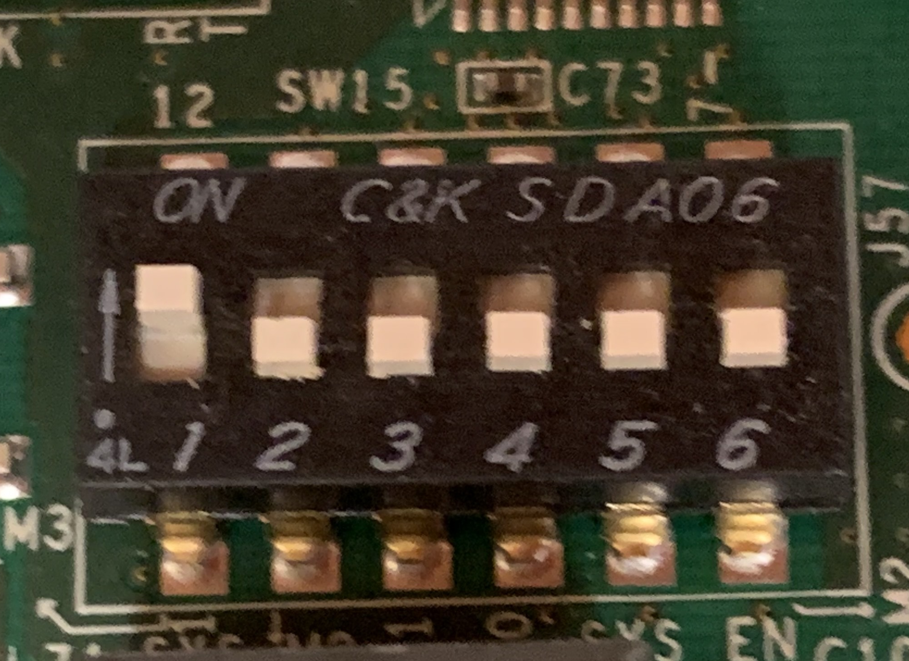

Hardware Setup
This section describes the required hardware and host system configuration needed to bring up the KCU105 development platform.
Required Hardware
You will need the following hardware components:
KCU105 Development Board
One Xilinx KCU105 development board is required:
10GbE SFP+ Transceiver
You will need a 10GbE SFP+ transceiver compatible with the KCU105 board. An example of a suitable transceiver is:
Fiber Optic Cable
A fiber optic cable compatible with the selected SFP+ transceivers is required. For example:
Host System 10GbE Network Interface
A host machine equipped with a 10GbE network interface card (NIC) is required to communicate with the KCU105 over the SFP+ link.
A low-cost and commonly available option is a Broadcom BCM57810S–based dual-port 10GbE SFP+ PCIe NIC, for example:
This NIC supports SFP+ transceivers and is widely supported by Linux kernel drivers, making it a good and inexpensive choice for development and testing.
Micro USB Cable
A micro USB cable is required for initial firmware programming using the JTAG-to-USB connector on the KCU105 board.
Board Configuration
QSPI Boot Mode Selection
For booting the KCU105 via the QSPI PROM, configure the SW15 switch with position #1 set in the arrow direction.
{kind=link}

KCU105 Hardware Overview
The following image shows the KCU105 hardware layout:

Initial Firmware Programming
The KCU105 must be programmed via JTAG the first time before it can boot from the QSPI PROM.
Use the JTAG-to-USB connector on the board and follow the instructions provided in the SLAC firmware programming guide:
Host System Configuration for SFP+ Transceivers
Some 10GbE NICs may restrict the use of non-vendor-qualified SFP+ transceivers by default. On Linux systems, this restriction can be overridden by updating the GRUB configuration.
Edit the GRUB configuration file:
root@ubuntu:~# nano /etc/default/grub
Update the kernel command line parameters as follows:
GRUB_CMDLINE_LINUX_DEFAULT=""
GRUB_CMDLINE_LINUX="ixgbe.allow_unsupported_sfp=1"
Apply the updated GRUB configuration:
root@ubuntu:~# update-grub
Reboot the system for the changes to take effect:
root@ubuntu:~# reboot
After rebooting, verify that the SFP+ transceiver is detected correctly by the network interface before proceeding with further setup.